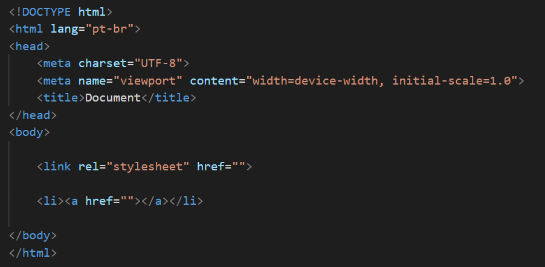

Para criar um link dentro de uma página html é muito simples, você deverá usar estes comandos dentro do body.
Como você pode ver, aqui existem dois tipos de links que foram colocados dentro do body, o primeiro é para poder conectar a sua página html com uma página de estilo.css que poderá estilizá-lo da forma que você preferir.
E o segundo é um link que você poderá usar para entrar em uma página não apenas do mesmo site como também de outros sites, quando você clicar nele.